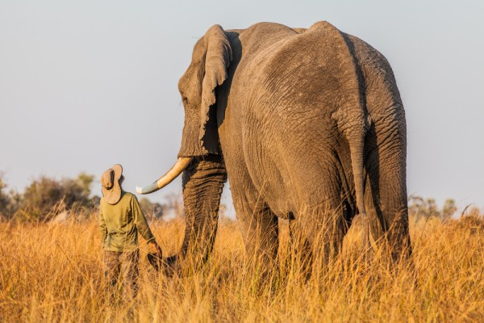
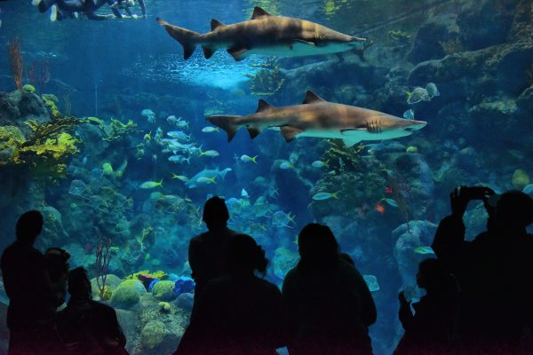
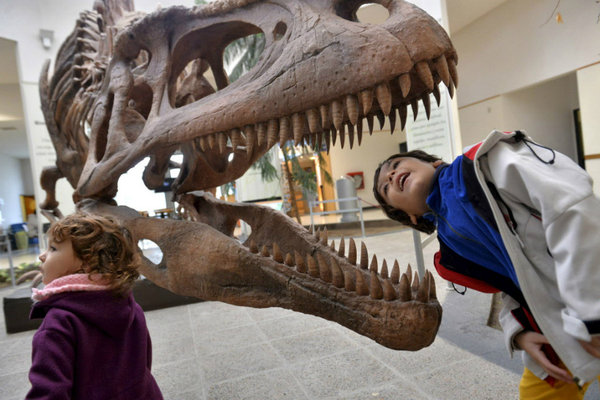

Discover Charities
Animals
Wildlife conservation seeks to maintain a world where wildlife thrives in healthy lands and seas and is valued by societies that embrace and benefit from the diversity and integrity of life on earth. These charities include wildlife refuges and sanctuaries, as well as wildlife protection and conservation research groups.
Wildlife Conservation
Zoos and aquariums are committed to saving species worldwide by uniting our expertise in animal care and conservation science with a dedication to inspiring passion for nature. These include charities which operate zoos, aquariums and zoological societies.
Zoos and Aquariums

Arts, Culture, Humanities
Libraries, Historical Societies, and Landmark Preservation Charities preserve and commemorate the events, places, and cultures that created and continue to shape different cultures. These charities operate and support public and specialized libraries, historical societies, historical preservation programs, and historical estates.
Libraries, Historical Societies, and Landmark Preservation

Museums aim to inspire wonder, discovery, and responsibility for our natural and cultural worlds. These charities include traditional arts, science, technology, and natural history museums, as well as academies and institutes that provide training to practitioners in addition to maintaining collections.
Museums
Performing Arts charities bring the arts to the public through major theatrical venues such as symphonies, orchestras, ballets, operas, and theater groups; arts festivals; performance halls and cultural centers; and secondary school arts programs that promote scholastic achievement.
Performing Arts

Public Broadcasting and Media charities promote the distribution of ideas by operating and supporting major public television and radio stations and networks, as well as independent local-access media and communications services.
Public Broadcasting and Media

Community Development
Housing and Neighborhood Development charities lead and finance development projects that invest in and improve local communities by providing utility assistance, small business support programs, and other revitalization projects.
Housing and Neighborhood Development

The United Way is a global organization composed of local chapters which provide funds and support to local schools, government agencies, businesses, organized labor, financial institutions, community development corporations, voluntary and neighborhood associations, and faith communities who support education, economic growth and stability, and health advancments.
United Ways


Education
Early Childhood and Youth Education Programs provide foundation-level learning and literacy for children prior to entering the formal school setting, as well as programming, classroom support, and instruction to school-aged students. In addition, post-secondary programs offer formal preparation for semiskilled, skilled, technical or professional occupations for college-age students.
Early Childhood and Youth Programs
Adult Education Programs typically operate outside the formal educational system and provide an array of opportunities for adults to develop their leadership skills or expand their knowledge in a particular discipline. These programs encourage students to explore and develop skills in a new area of interest, learn a second language, or complete their high school education.
Adult Education Programs
Special Education organizations provide services, including placement and individualized programming, instruction, and support services, for children and youth who are gifted or have disabilities that require appropriately modified curricula, teaching methodologies, or instructional materials in order to learn.
Special Education
Education Policy and Reform charities promote and provide research, policy, and reform of the management of educational institutions, educational systems, and education policy./span>
Education Policy and Reform

Environment

Health
Diseases, Disorders, and Disciplines charities are multipurpose organizations that seek cures for particular diseases and disorders and promote particular medical disciplines by providing direct services, advocating for public understanding and support, and supporting targeted medical research.
Diseases, Disorders, and Disciplines

Patient and Family Support organizations offer wish granting programs, camping programs, housing or travel assistance and other services for family members and patients that are diagnosed with a serious illness.
Patient and Family Support
Treatment and Prevention Services charities are devoted to providing direct medical services to the public, as well as promoting public understanding and awareness of the prevention of healthe risks, diseases, disabilities.
Treatment and Prevention Services

Medical Research organizations are scientific or academic based groups that research causes and cures of disease and develope new treatments.
Medical Research

Human Civil Rights

Human Services
Children's and Family Services provide child care, adoption, foster care, family counseling, parenting education, and other advocacy and child welfare services that strengthen families and promote the well-being of our children. They also include youth camps, ranches, and shelters which serve the needs of at-risk children and recreation organizations providing programs in scouting and athletics.
Children's and Family Services
Food Banks, Pantries, and Distribution Organizations provide hunger relief in communities throughout our world.
Food Banks, Pantries, and Distribution

Homeless Services provide assistance to homeless individuals and families through direct social services as well as advocacy.
Homelessness Services
Social Services charities provide programs addressing the needs of the disadvantaged, the underemployed, the elderly and disabled, and other specific populations. They also include community centers and settlement houses that provide integrated services for local communities and multipurpose organizations, such as YMCAs and the Red Cross, that promote volunteerism and provide a broad range of direct services in the communities they serve.
Social Services
International
International Peace, Security, and Affairs charities promote peace and understanding among all nations through cultural and student exchange programs; human rights groups; promoting improved relations between particular countries; foreign policy research and advocacy; and wUnited Nations-related support.
International Peace, Security, and Affairs

Humanitarian Relief Supplies organizations specialize in collecting donated medical, food, agriculture, and other supplies and distributing them overseas to those in need.